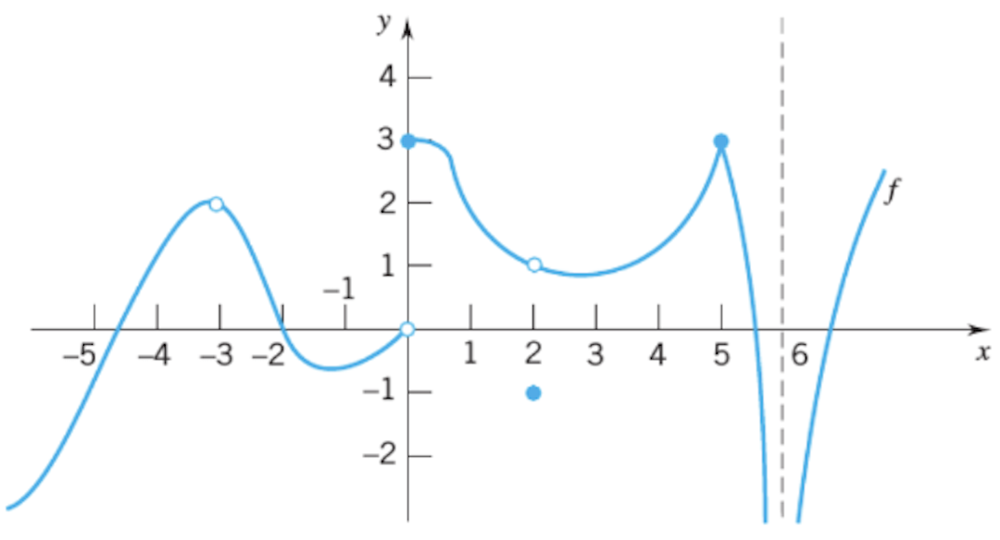
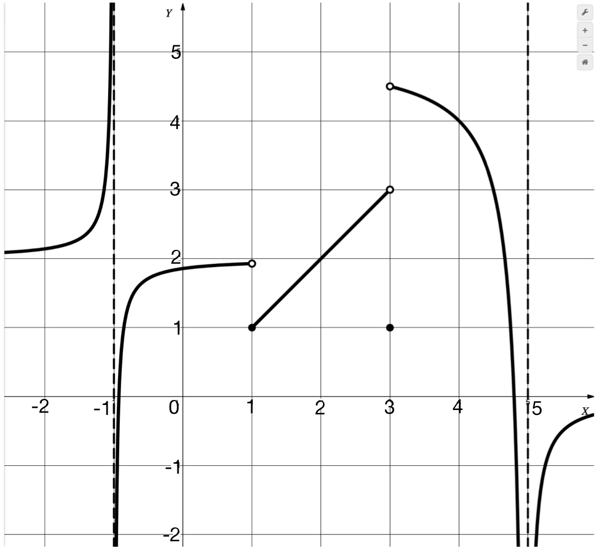

Print preview
Handout Day 4 - Sections 2.4 and 2.6a: One-Sided and Infinite Limits
Last Time: We learned how to find limits of relatively nice functions, using graphs and algebra.
Today: We’ll learn about one-sided limits, when limits exist, and how to deal with infinity.
Problem 1 (Warm Up).
The graph of a function \(f(x)\) is shown below. Find the following limits. If you aren’t sure what the answer should be, discuss with a neighbor.

-
\(\displaystyle \displaystyle \lim_{x \to 2} f(x)\)
-
\(\displaystyle \displaystyle \lim_{x \to 0} f(x)\)
The first limit above should be straightforward, but the other is a new situation we want to learn about today.
The issue we see with part 2) of the problem above is also a really important one. What do we do with a limit when it approaches different values from the left and right?
Definition.
A limit is a limit \(\displaystyle \lim_{x \to a} f(x)\) that only considers the case or .
-
\(\displaystyle \lim_{x \to a^-} f(x)\) is the limit of \(f(x)\) as \(x\) approaches \(a\) from the . It is called the limit.
-
\(\displaystyle \lim_{x \to a^+} f(x)\) is the limit of \(f(x)\) as \(x\) approaches \(a\) from the . It is called the limit.
Note: We recall that for \(\displaystyle \lim_{x \to a} f(x) = L\text{,}\) where \(L\) is a real number, the values of \(f(x)\) must get infinitely close to \(L\) as \(x\) approaches \(a\) from left-hand and right-hand sides.
For this reason, the ordinary limit \(\displaystyle \lim_{x \to a} f(x)\) is called a limit.
Fact.
Now, the definitions of two-sided and one-sided limits, together with the warm-up problem, lead us to an important fact:
The two-sided limit \(\displaystyle \lim_{x \to a} f(x)\) exists if and only if (exactly when):
-
The exists
-
AND The exists
-
AND \(=\)
That is, any time our one-sided limits match, the two-sided limit .
One-Sided Limits of Piecewise Functions.
One common place where one-sided limits appear is in functions. In such cases, we evaluate the limit using the of the function that corresponds to the appropriate side (left or right) of \(a\) as \(x\) approaches \(a\text{.}\) For example:
Problem 2.
Given that
\begin{equation*}
f(x)=\begin{cases}e^x-2 \amp \text{if } x \leq 0\\ x^2-\ln(x+1)+1 \amp \text{if } x \gt 0\end{cases},
\end{equation*}
find \(\displaystyle \lim_{x \to 0^+} f(x)\text{,}\) \(\displaystyle \lim_{x \to 0^-} f(x)\text{,}\) and \(\displaystyle \lim_{x \to 0} f(x)\text{.}\)
Problem 3.
Next, let’s examine the following problem and explore the interaction between infinite and one-sided limits a bit. Consider the function \(f(x)\) below. Find each limit.

-
\(\displaystyle \lim_{x \to 1^-} f(x) =\)
-
\(\displaystyle \lim_{x \to 1^+} f(x) =\)
-
\(\displaystyle \lim_{x \to 1} f(x) =\)
-
\(\displaystyle \lim_{x \to -1^-} f(x) =\)
-
\(\displaystyle \lim_{x \to -1^+} f(x) =\)
-
\(\displaystyle \lim_{x \to -1} f(x) =\)
-
\(\displaystyle \lim_{x \to 5^-} f(x) =\)
-
\(\displaystyle \lim_{x \to 5^+} f(x) =\)
-
\(\displaystyle \lim_{x \to 5} f(x) =\)
So we see that of the three two-sided limits (parts 3, 6, and 9) above exist, but the amount of information we can give about them varies, and our final answer is always as informative as possible.
We can guess from the graph that \(\displaystyle \lim_{x \to 5} f(x) =\) .
But what does it mean for a limit to be ?
We say that \(\displaystyle \lim_{x \to a} f(x) = \pm \infty\) if \(f(x)\) becomes arbitrarily and / as \(x\) approaches \(a\text{.}\)
Infinite Limits.
But wait... \(\infty\) is not a ! Our definition says that a limit exists only if it’s equal to . That means we have an important distinction to make here:
Infinite limits .
That is, saying \(\displaystyle \lim_{x \to a} f(x) = \pm\infty\) is just a way of saying that \(\displaystyle \lim_{x \to a} f(x)\) DNE—and we always want to be as specific as possible!
Finding Infinite Limits Algebraically.
We’ll spend the rest of the day looking at how we can find limits of this type algebraically—they’re easy to recognize on a graph, but we want to be able to do both.
Let’s consider the following limit. First, we can use direct substitution to observe that
\begin{equation*}
\displaystyle \lim_{x \to 3}\frac{x^2-9}{(x-3)^2} = \Big( \underline{\hspace{0.6in}} \Big),
\end{equation*}
and then applying to simplify:
\begin{equation*}
\displaystyle \lim_{x \to 3}\frac{x^2-9}{(x-3)^2} = \underline{\hspace{1.8in}} = \underline{\hspace{1.4in}} = \Big( \underline{\hspace{0.6in}} \Big)
\end{equation*}
Q: What do we do with something that looks like \(\left(\dfrac{\text{nonzero \#}}{0}\right)\text{?}\)
A: Answers like this are a sign that we have an limit!
As we saw in parts (4)--(6) and (7)--(9) of Problem 3, to be as specific as possible, an infinite limit has three possible outcomes:
-
If the one-sided limits are both , the corresponding two-sided limit is .
-
If the one-sided limits are both , the corresponding two-sided limit is .
-
If the one-sided limits are infinite with signs (or only one is infinite), the corresponding two-sided limit .
Thus our approach in this case will be to evaluate limits and see what we can learn.
So let’s keep going, looking at the one-sided limits of to see what we can learn:
Thus, the limit . And so \(\displaystyle \lim_{x \to 3}\dfrac{x^2-9}{(x-3)^2}\) .
Big Idea of the Day.
Whenever
-
limits are involved,
-
or you encounter a limit that you are sure how to evaluate algebraically,
then looking at the limits at that point can be a very helpful strategy.
Notation Warning.
-
When finding a limit, be sure to use around that involve undefined notations (e.g., \(0^+\text{,}\) \(0^-\text{,}\) \(\infty\text{,}\) \(-\infty\text{,}\) or \(0\) in the denominator) in any intermediate substitution, before arriving at the final answer for the limit.
-
Points will be deducted on quizzes and midterms for incorrect or improper use of mathematical notation.
-
Here are some examples:
\begin{align*}
\displaystyle \lim_{x \to 3}\frac{x^2-9}{(x-3)^2} \amp = \Big( \frac{0}{0} \Big) = \text{DNE},\\
\displaystyle \lim_{x \to 3^-}\frac{x}{(x-3)^2} \amp = \left( \frac{3}{0^+} \right) = \infty, \qquad \displaystyle \lim_{x \to 3^+}\frac{x-4}{(x-3)^3} = \left( \frac{-1}{0^+} \right) = -\infty,\\
\displaystyle \lim_{x \to \infty}\frac{2^{3x} - 2^x + 5}{2^{2x}+7} \amp = \left( \frac{\infty}{\infty} \right) = \ldots \text{(studied later)} \ldots = \left( \frac{1-0+0}{0^++0^+} \right) = \left( \frac{1}{0^+} \right) = \infty,\\
\text{and } \displaystyle \lim_{x \to -\infty}\frac{x^2-2x+4}{3x^2-5} \amp = \left( \frac{\infty}{\infty} \right) = \ldots \text{(studied later)} \ldots = \frac{1}{3}
\end{align*}
![Runestone Academy logo]()
![MathJax logo]()